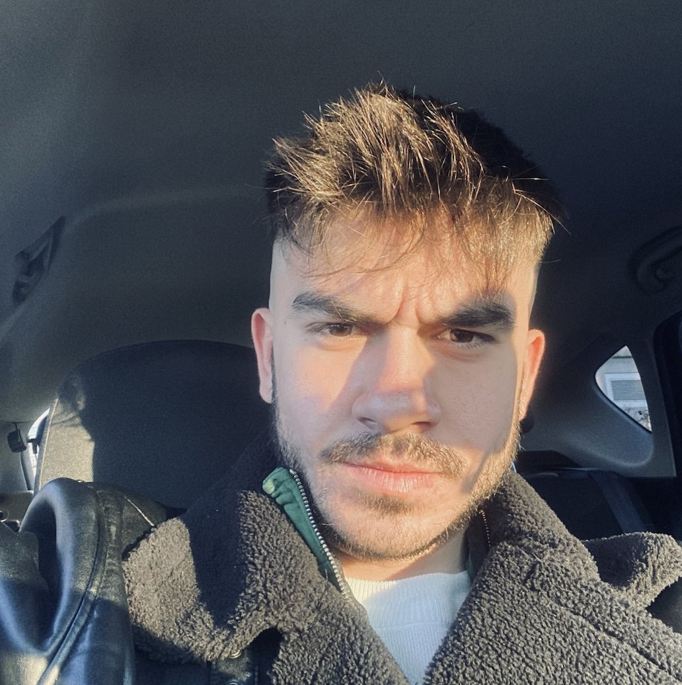

Furkan Özdemir

Summary
Hello, I am Furkan Özdemir. I am a graduate of Yalova University Computer
Programming. I am currently studying Computer Engineering at Bilgi
University, 100% in English. Throughout my education life, I participated
in many group activities, designed and launched projects, and conducted
research. I want to continue my studies while continuing my education in
my career goal, the development of which I consider essential for myself.
Education
-
Associate Degree, Computer Programming - Yalova University (Sep 2020/Jun
2022)
During and before my education life, I always loved making
computer‐based applications, improving processes and adding new things
to myself in the field of computers and software. Yalova University
Computer Programming department has been very helpful in paving the
way for my wishes and goals.
-
Bachelor's Degree, Computer Engineering - Istanbul Bilgi University (Sep
2023/Present)
I transferred to Bilgi University Computer Engineering in order to
receive the professional diploma I needed to achieve my goals. I am
improving myself a lot with the training my university provides on
using a foreign language and improving my technical infrastructure. In
this development adventure, I want to increase myself by adding new
things to my business field.
Work Experience
-
Computer Programming Internship - BERKİN DEFENSE INDUSTRIAL
ENGINEERING, Istanbul
Jun 2022 - Aug 2022
-
Before graduating from Computer Programming, I did my compulsory
internship at Berkin Engineering company in Teknopark. Learning the
usage areas of the theoretical processes taught in my education life
in business life has been very useful in gaining experience on the
issues I need to improve myself. After my internship, I continued my
job as a staff member at Teknopark.
-
Computer Programmer - BERKİN DEFENSE INDUSTRIAL ENGINEERING, Istanbul
Sep 2022 - Mar 2023
-
After graduating from Computer Programming, I started working at
Berkin Engineering Company in Teknopark. I took part in the continuity
of processes in web software (backend and fronted), IT support, and
embedded software. I made plans to complete ongoing projects and new
projects on schedule. For example, I was responsible for completing
the software on device parts used in the defense industry. In addition
to the support I provided to web software, I took part in
troubleshooting the hardware equipment in the company. I attended
industry-related fairs. I believe that I have improved myself and the
team in this company in a short time.
Skills
- HTML5 : ⭐ ⭐ ⭐ ⭐
- IT Consultant : ⭐ ⭐ ⭐
- Photoshop : ⭐ ⭐
- Microsoft SQL Server : ⭐ ⭐ ⭐
- C# : ⭐ ⭐
- Embedded Software : ⭐ ⭐
- Computer Networks : ⭐ ⭐ ⭐
Awards and Certifications
-
Full Stack Web Design and Programming Training(short course) - Udemy
(Jul 2019 - Oct 2019)
- Php - Udemy(Sep 2020 - Dec 2020)
- Creating a WordPress Website - Udemy (Jun 2021 - Oct 2021)
Other
Social Media
✓ Linkedin:
Furkan's Profile
© Furkan Özdemir. All rights reserved.